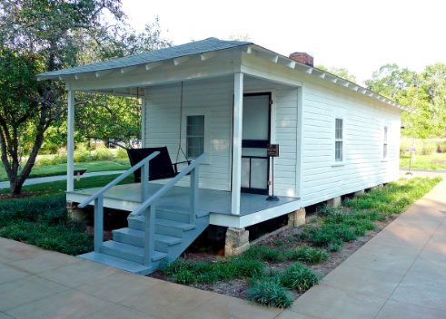

About: Peppertown Restaurant in Mantachie, Mississippi offers many inexpensive brunch options. Most of the costumers enjoy eating breakfast here or ordering a burger. The reviews on Google are off the charts with a 4.8 star rating.
About: This sophisticated 1920s hotel with a restaurant serving Southern cuisine & an indoor pool is a great place to stay. The hotel is conveniently located near the Amtrak station and the Mississippi Governer's Mansion. Guests are offered a complimentary breakfast and a 24/7 fitness center and pantry.
About: If you are visiting Mississippi it is inevitable that you visit the birthplace of iconic star Elvis Presley. Here, you can visit the two room house built by his father, grandfather, and uncle. Take a trip through the childhood of Presley were you can see the humble family home he was raised in.

Spa
Aqua the Day Spa
Location: 1000 Highland Colony Pkwy #8001, Ridgeland, MS 39157
About: The Aqua Day Spa is committed to briging quality spa treatment to you. The highly trained staff pursue an eductaion being skilled in everything they do from skin, body, to hand and nail care.
About: The Mississippi Musuem of Art offers exhibitions in pottery and sculptures. There are special events such as art classes and cretaive healing studios. Although their events change from time to time it is best to check their website to see what is new.